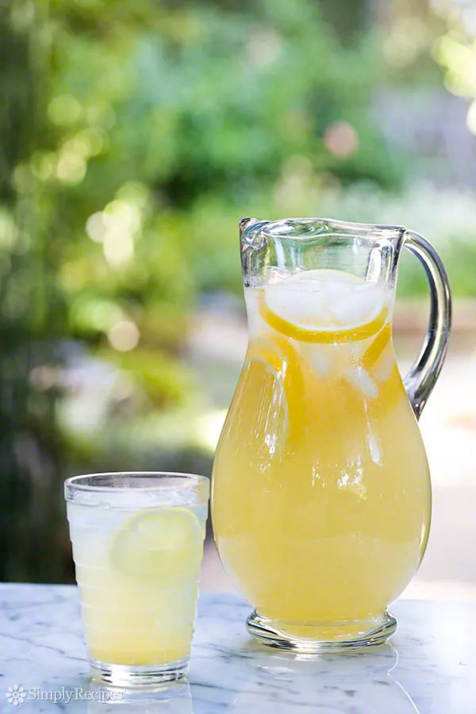

A Perfect Lemonade

Lemonade: sugar, water, lemon juice. Easy, right?
Well, the problem is that if you just stir all of these
together the sugar will sink to the bottom. So the best way to make l
emonade is to make a simple syrup first, by heating water and sugar
together until the sugar is completely dissolved, and then mix that with the lemon juice.
Let's make a Perfect Lemonade.
Ingredients :-
- 1 cup sugar (can reduce to 3/4 cup)
- 1 cup water (for the simple syrup)
- 1 cup lemon juice
- 2 to 3 cups cold water (to dilute)
Steps :-
-
Make 'Simple Syrup' :-
Place the sugar and water in a small saucepan and bring to a simmer.
Stir so that the sugar dissolves completely and remove from heat.
-
Juice the lemons :-
While the water is heating for the simple syrup, juice your lemons.
Depending on the size of the lemons, 4 to 6 of them should be enough for
one cup of juice.
-
Combine lemon juice, simple syrup, water :-
Pour the juice and the simple syrup sugar water into a serving pitcher.
Add 2 to 3 cups of cold water and taste. Add more water if you would like it to be
more diluted (though note that when you add ice, it will melt and
naturally dilute the lemonade).
If the lemonade is a little sweet for your taste, add a little more straight lemon juice to it.
-
Chill :-
Refrigerate 30 to 40 minutes.
-
Serve with ice, sliced lemons.
| Prep Time |
Cook Time |
Total time |
Difficulty Level |
| 10 mins |
00 mins |
10 mins |
Very Easy |
Go to Top of Page | Home page | Credit for Recipe | Recipe Project by Yash.